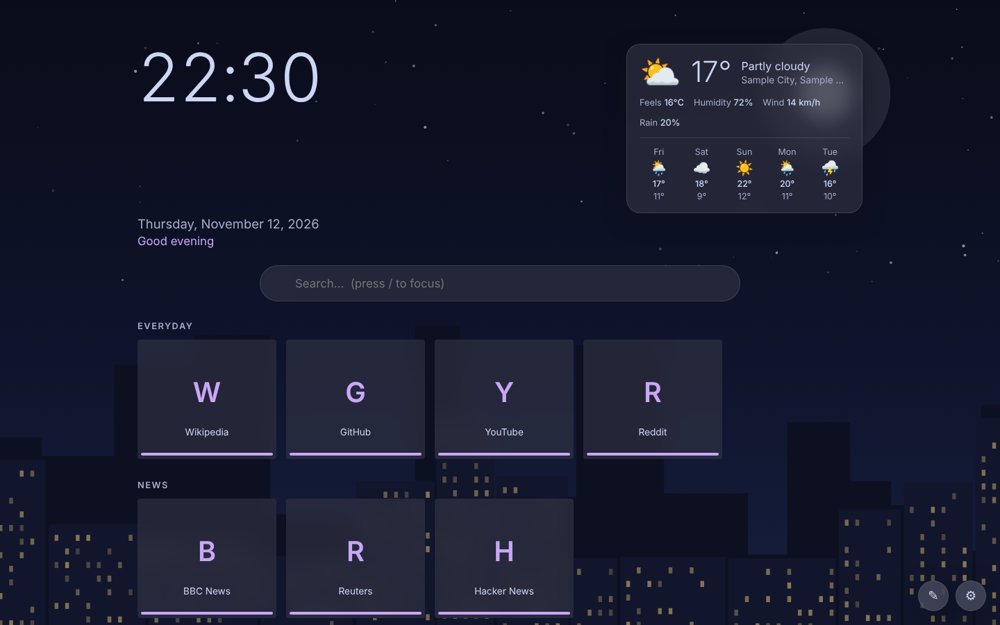
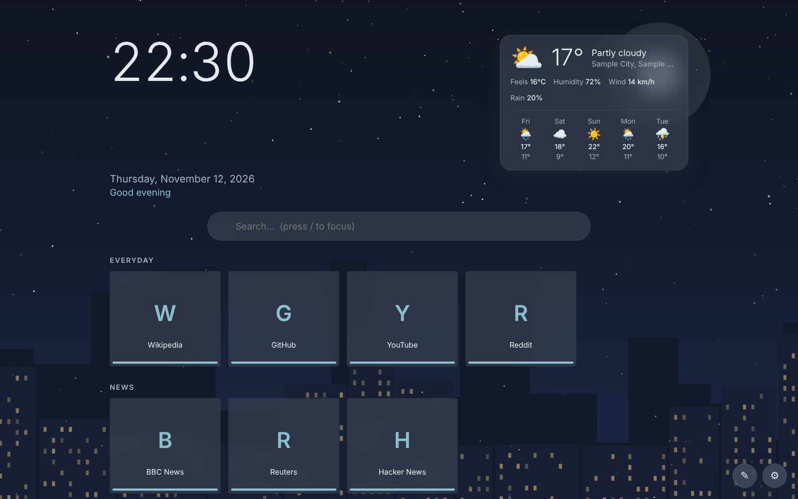
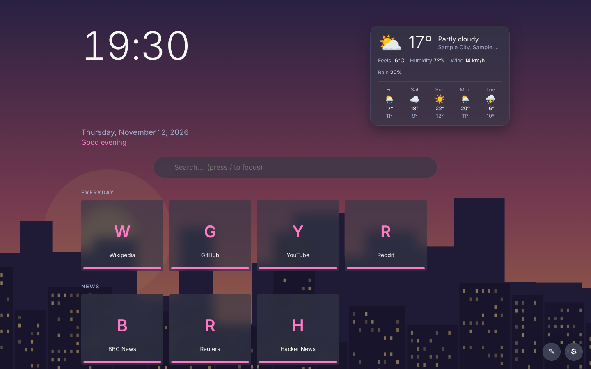
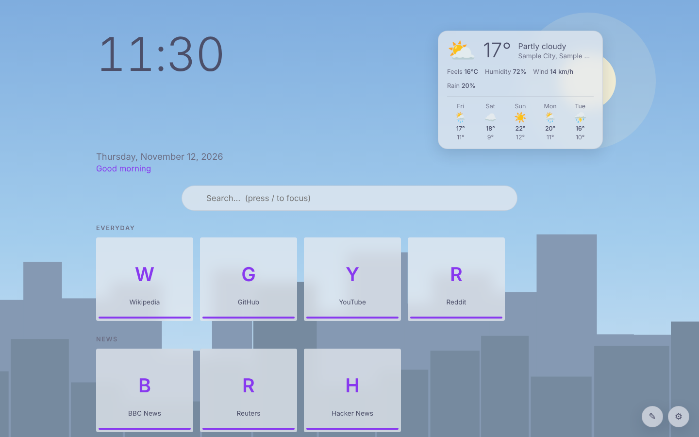
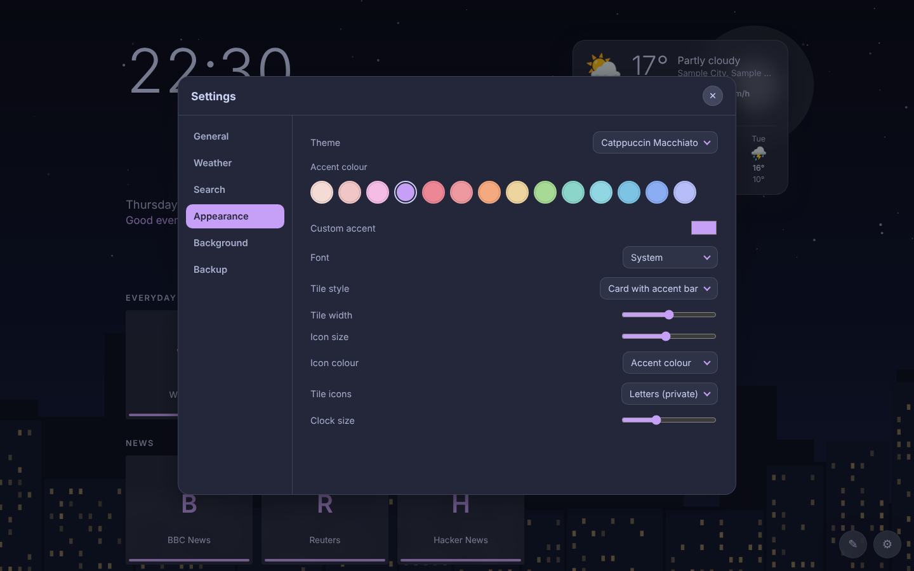

A new tab that feels yours.
Live weather, tiles you can drag and snap into place, Catppuccin, Dracula and Nord themes, animated backgrounds, and city photos that change with the time of day. No accounts. No tracking.

Screenshot from the demo build: sample weather, and the built-in drawn skyline that appears whenever a city photo can't load.
Everything on one calm page
Built to be quick to open and easy to rearrange.
Live weather
Current conditions and a 5-day forecast from Open-Meteo. Search a city or use your location. °C or °F.
Layout editor
Move, resize or remove the clock, date, greeting, weather, search and links. Everything snaps to a 12-column grid so it stays even.
Tiles with real icons
Grouped link tiles. Search thousands of icons, upload your own, tint them with your accent, and size tiles and icons freely.
10 themes, real accents
Catppuccin Latte, Frappé, Macchiato and Mocha; Dracula and Alucard; Nord and Nord Light. Each has its own accent swatches.
Animated backgrounds
Aurora, stars, rain, snow, fireflies, waves, or match the weather. Light on battery and respects “reduce motion”.
City photos by time of day
Tokyo, London, New York, Paris, Sydney, Dubai, Singapore and Auckland. Dawn, day, dusk and night photos follow your clock. Add your own.
Fonts
A curated set of font pairings, loaded only when you choose one.
Backup & sync-free
Export and import your setup as a file to move between browsers or computers.
Themes
Full palettes, not just a tint. Every theme brings its own accent colours.




Install
Not in the extension stores yet, so you install it yourself. It takes about a minute.
Chrome · Edge · Brave Download .zip
- Unzip the file somewhere it can stay (the browser reads it from there).
- Open
chrome://extensions(edge://extensions,brave://extensions) and switch on Developer mode. - Click Load unpacked and pick the unzipped folder.
- Open a new tab.
Chrome may show a “Change back?” bar for extensions that replace the new tab. Dismiss it.
Firefox Download .xpi
- Open
about:debugging#/runtime/this-firefox. - Click Load Temporary Add-on… and choose the downloaded file (or the unzipped
manifest.json). - Open a new tab.
Temporary add-ons are removed when Firefox restarts. For a permanent install, see below.
xpinstall.signatures.required to false in about:config.Privacy
Your links, settings and uploaded photos stay in your browser. There are no accounts and no analytics. The only network requests happen when you use these features:
| Feature | Contacts | What it learns |
|---|---|---|
| Weather | open-meteo.com | The coordinates of the location you chose |
| City search | geocoding-api.open-meteo.com | The place name you typed |
| Icon search | api.iconify.design | Your search words |
| City photos (optional) | commons.wikimedia.org | Your IP address |
| Theme fonts (optional) | Google Fonts | Your IP address |
| Site favicons (optional, off by default) | icons.duckduckgo.com | The domains of your tiles |